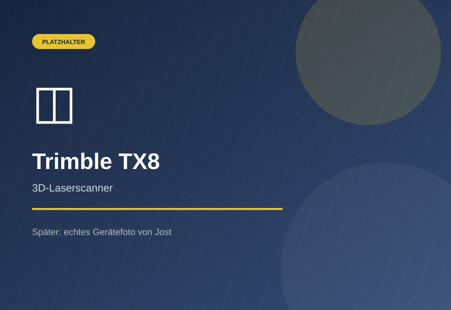

01
Ingenieurvermessung
Bauabsteckung, Kontrollen, Planungsgrundlagen, Bestands- und Innenaufmaß sowie Kataster- und Überwachungsmessungen.
Mehr erfahren →Wir begleiten Bau- und Infrastrukturprojekte mit präziser Vermessung und digitalen Geodaten – zuverlässig, nachvollziehbar und mit moderner Technik.
Klassische Vermessung und digitale Erfassung aus einer Hand.
Bauabsteckung, Kontrollen, Planungsgrundlagen, Bestands- und Innenaufmaß sowie Kataster- und Überwachungsmessungen.
Mehr erfahren →Leitungsdokumentation, Tief- und Straßenbau, DGM/Massen, Maschinensteuerung und präzise Absteckung.
Mehr erfahren →Verformungsgerechtes Aufmaß, 2D-/3D-Auswertung sowie CAD- und BIM-Schnittstellen.
Mehr erfahren →RTK-Drohne für Massenermittlung, Inspektion, Orthophotos und Infrastruktur-Bestand.
Mehr erfahren →Direkte Abstimmung, nachvollziehbare Ergebnisse und Formate, die im Projekt weiterverwendet werden können.
Echte Projektaufnahmen stehen im Mittelpunkt und zeigen sofort, in welchen Situationen GudeliusVermessung eingesetzt wird.


Die Bilder stammen vorläufig von Hersteller- bzw. Produktseiten und dienen nur als Platzhalter. Später werden sie durch eigene Aufnahmen ersetzt.





Jost Gudelius, B. Eng. (FH) ist Vermessungsingenieur mit langjähriger Projekterfahrung im Hoch-, Tief- und Straßenbau. Seit 2020 führt er sein eigenes Vermessungsbüro in Jachenau.
Kurze Eckdaten genügen für den ersten Austausch.
Was soll vermessen werden?